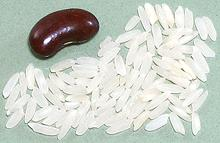
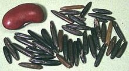

American Rice
The Americas
are comprised of four distinct regions: North America,
Central America. South America, and Caribbean. In matters of rice, North
America and South America dominate, because The United States, Brazil,
Uruguay, and Paraguay, Argentina, and Peru are significant growers and
exporters.
The United States is the 4th largest exporter at $1.9 billion, behind India,
Thailand, and Pakistan. Brazil, at $506 million, is the 9th largest, behind
Italy and ahead of Cambodia. Also significant are Uruguay (11th at $468.9
million) and Paraguay (14th at $295 million). All added together are way
behind India at $8 billion (32.6% of all exports).
United States rice production is very diverse, with major crops of both
indica and japonica varieties, and a broad selection of distinct
cultivars of each. The United states also has a very wide array of processing
and preparation methods.
Canada, has no commercial rice production, but is testing japonica
varieties. Parts of Canada are at similar latitude to Japan, Korea, and
Northern China, where rice is grown.
Photo by Richard Apple distributed under license
Creative Commons
Attribution-ShareAlike v3.0 Unported.
More on Rice.
North America Rice
The United States has been a major exporter of rice since it was a British
colony - and was possibly the first country to grow rice specifically for
export. Carolina Gold rice is thought to have arrived around 1685, and was a
major export crop well before 1776.
There are two rice growing regions in the United States, The Mississippi /
Gulf coast, and the northern California Central Valley. The types of rice grown
in these two regions are very different. In the South, it is long grain
indica types, and in California is is medium grain japonica
types. Both regions are major exporters, California primarily to Japan, Korea,
Taiwan, and Turkey. The southern states export huge amounts to Mexico, and
about half that much to Haiti. Other significant markets are Canada, South
and Central Americas, Iraq, and Saudi Arabia.
American Basmati
This title generally refers to either Texmati
or Popcorn Rice, both Basmati-Patna hybrids.
It can also refer to real Basmati rice grown in the US by boutique
growers, but this is not common.
American Long Grain

This rice is what rice is to most Americans. It is a long grain
Patna type rice originating from India,
This rice is grown mainly in Arkansas, Texas, Louisiana, and South America.
The photo specimens were typically
0.295 inch long and 0.070 inch wide (7.5 x 1.8 mm). A cup of rice will
take about 1-3/4 cups of water and cook up to 3 cups in about 25
minutes.
California Rice
Growing rice in California was started by Japanese farmers. Since all
their lands were illegally seized, they re-established the industry after
World War II. The focus was always on japonica type rice, the type
grown in Japan. The climate of the north Central Valley wasn't good for
Indica anyway.
California is also a major purveyor to the ever profitable yuppie and
"health conscious" demographics, so specialty "boutique" rices are grown
for those market sectors. We list a few of those here.
|
Botan - California
This is a brand of Calrose rice bordering on "sweet rice". It is
not that well thought of, particularly for making sushi. Try to get
Kokuho Rose, or if you can't find it, some
other brand of Calrose for sushi. On the
other hand, Cooks Illustrated "America's Test Kitchen" rated Kokuho Rose
low, and Botan best for sushi - but, really? Boston? Sushi? Maybe they
should stick to Baked Beans.
Calrose
Grown in California, Australia, and parts of South America, this is a
medium grain rice suitable for sushi and other Japanese, Korean and
northern Chinese recipes, or practically anywhere a medium grained rice
is required.
Caution: "Calrose" once meant a specific variety which
hasn't been grown since the 1970s - it is now a generic name for
several varieties of California type rice. One common brand, Botan,
has been widely criticized, particularly for use in sushi. One
knowledgeable writer recommends Safeway brand Calrose as much better
(date of post unknown), but even more recommends my favorite,
Kokuho Rose. For details see our
California / Japanese Rice
page.
Kokuho Rose
 A Japanese style medium grain rice developed by Koda Farms of
South Dos Palos, California. I definitely prefer this rice to
Calrose varieties. The photo specimens
were typically 0.230 inch long and 0.105 inch wide (5.8 x 2.6 mm).
For details see our California /
Japanese Rice page.
A Japanese style medium grain rice developed by Koda Farms of
South Dos Palos, California. I definitely prefer this rice to
Calrose varieties. The photo specimens
were typically 0.230 inch long and 0.105 inch wide (5.8 x 2.6 mm).
For details see our California /
Japanese Rice page.
Note that in Los Angeles, Korean markets carry all the Japanese
ingredients you might need, because Japanese markets are pretty much
extinct here - the Japanese have been assimilated. Little Tokyo is
now mostly Korean owned, as are most of the sushi bars.
Mochi Rice - This is a
non-specific term for Japanese sweet rice that is used to make Mochi
dough, much used for sweets and deserts. It is of the Short Grain
Sweet variety.
Sushi Rice - This is not a type of rice, but a
medium grain rice seasoned with rice vinegar. Quite a few sources say
it is short grain / sweet rice. This is wrong - sweet rice makes very
inferior sushi. In California, sushi rice will be Calrose, or preferably
Kokuhu Rose. Nishiki brand is also favored for sushi. Note that one brand
of Calrose, Botan, has been flagged as inferior for sushi. For details see
our California / Japanese Rice
page.
Short Grain Sweet
 [Glutenous Rice]
[Glutenous Rice]
This intensely white short grain rice is the
standard type for sweet rice. Sweet rice is no sweeter than any other
kind, but gets the name from being used mainly to make sweets and
deserts. The photo specimens, grown in California, by Koda Farms, were
0.200 inches long by 0.107 inch wide (5.1 x 2.7 mm). A cup of this
rice needs about 2-1/2 cups of water and cooks in about 25 minutes.
Note that for Loatian and Issan Thai cooking, the sweet rice to use
is Thai Long Grain Sweet Rice, which is quited different.
California Botique Rice
These are rices grown organically by the Lundberg family and a few others,
tuned for the yuppie and "health conscious" markets. These can be found
in Whole Foods Market and similar up-market outlets, and in some large
multi-ethnic markets here in Los Angeles. Lundberg has a lot more
overpriced rices, but the two listed here seem to be their flagship
products.
|
Black Japonica®
Lundberg - This is actually a dark brown and a very dark brown,
almost black rice variety planted together and harvested together. The
photo specimens were typically 0.240 inch long and 0.100 inch wide
(7.3 x 3.0 mm). A cup of this rice needs 2 cups of water and 50
minutes cooking time. Lundberg sells this for 2021 US $4.99 / pound.
Red Rice - Formerly "Wehani"®
Lundberg - A long grain aromatic rice developed primarily
from basmati (though it doesn't look much like brown basmati) by the
Lundberg Family in California. It has a deep reddish brown color, and
when cooked has an aroma suggestive of hot buttered peanuts. The grains
tend to split open lengthwise when cooked, much like wild rice does.
The photo specimens were typically 0.295 inch long and 0.112 inch
wide (7.5 x 2.9 mm). To cook, use 2-1/2 cups of water, bring to a boil
uncovered, then cover tightly and set the burner to just a simmer for
an hour. It'll still be a bit chewy, but nothing you can't manage.
Lundberg sells this for 2021 US $4.99 / pound. Other vendors are still
selling the Lundberg product under the name "Wehani".
Colusari®
 Kalustyan's - This is a very deep Burgundy red rice grown in
the Sacramento Valley of California. This rice is very highly regarded
by high priced gourmet chefs - it posesses the two qualities that define
"gourmet" - hard to find and absurdly expensive. When I acquired it in
2014 it was sold exclusively by Indian Harvest, for 2014 US $25.96 /
pound. Today it is sold by Klustyan's for 2021 US $9.99 / pound - except
they don't have any (9 2021).
Kalustyan's - This is a very deep Burgundy red rice grown in
the Sacramento Valley of California. This rice is very highly regarded
by high priced gourmet chefs - it posesses the two qualities that define
"gourmet" - hard to find and absurdly expensive. When I acquired it in
2014 it was sold exclusively by Indian Harvest, for 2014 US $25.96 /
pound. Today it is sold by Klustyan's for 2021 US $9.99 / pound - except
they don't have any (9 2021).
I bought an 8oz bag from Indian Harvest
2014. A cup of this rice needs about 2-1/3 cups of water to make 3 cups
in about 45 minutes. An 8 ounce package is about 1-1/3 cups, which the
package says will make 6 serving - rather scant servings in my opinion
- but it's a "gourmet" item. Fancy chefs can serve one tablespoon of it
on an otherwise vacant white plate, artfully garnished with a single
sprig of parsley, and charge plenty.
|
|
Carolina Gold / Charleston Gold
"Charleston Gold" is a restoration of the famous Carolina Gold Rice, now
again grown in South Carolina by Carolina Plantation. The "Gold" comes from
the appearance of rippening seed heads in the fields. Seeds were obtained from
a seed bank, and carefully nurtuted into a crop. Subsequently, selective
breeding of the Carolina Rice was applied to improve yield and flavor,
producing the "Charleston Gold" rice variety. The photo specimens of intact
grains were typically 0.280 inch long and 0.07 inch wide (7.1 x 1.8 mm).
Current production has a lot of broken grains - possibly it is soft and
difficult to mill, or possibly to emulate hand pounding, as was done by
slaves.
Caution: "Carolina Rice" and "Carolina Gold" (for their
par boiled version) are trademarks owned by Riviana Foods, a Texas-based
rice brand owner. Rice under these trademarks is an undistinguished long
grain Texas rice unrelated by type, taste, appearance, or otherwise
to the real Carolina Gold. The trademarks are probably the reason the real
thing is now sold as "Charleston Gold".
This is a long grain type rice genetically from southern India or
Indonesia, though it may have come from plantings in Madagascar. It was
formerly a major export crop in South Carolina, from where much was sent to
England in colonial days, then re-exported to Holland, Germany and France.
After the American Revolution shipments no longer cleared through England but
went direct.
Unfortunately, the growing methods used in South Carolina were heavily
dependent on "Them happy darkies out thar work'n the fields an sing'n they
songs. Den Damn Yankees come on down an' force'n the darkies to work for
pay". Slaves from West Africa taught Carolina how to grow rice in swampy
areas, but their health suffered badly from the swampy conditions. With no
slaves available after the Civil War, the crop went into decline and
disappeared. The last commercial crop was in 1927. Carolina Plantation is
not allowed to use slave labor, so how can they claim their rice is
"authentic"?
Popcorn Rice
A hybrid of basmati and Patna type rice grown in Louisiana and Texas,
this aromatic long grain rice, when cooked, has an aroma suggestive of
popcorn, thus the name. It lacks any true basmati character. This is a
rather small grain rice, the photo specimens being 0.275 inch long by
0.065 inch wide (7.0 x 1.7 mm). A cup of this rice needs 1-3/4 cups of water
and cooks in 25 minutes.
Texmati / American Basmati
This is a hybrid of Basmati and Patna type rice, developed by RiceTec. It is
sold under the brand RiceSelect which was formerly owned by RiceTec. It lacks
any true Basmati characteristics, yet RiceTec tried to patent the name
Basmati for it. Note that the milling is incomplete, resulting in more flavor
than plain white rice. Photo specimes were 0.280 inch long by 0.085 inch width
(7.1 x 2.2 mm). A cup of this rice needs 1-3/4 cups of water and cooks in
25 minutes.
Upland Rice
Thomas Jefferson became a proponent of upland rice when he noted the very
high amount of sickness paddy rice production was causing slaves. The
upland rice he acquired was an African variety.
Today, a number of upland rice varieties are grown in North America,
but not commercially. They are grown by small farmers or hobbyists for
their own use. They may be African glaberrima or Asian indica
varieties.
Photo by Desmanthus4food distributed under license
Creative Commons
Attribution Share-Alike v3.0 United States.
Wild Pecan Rice
 Not wild and no pecans - it's a hybrid long grain rice that owes most
of it's character to incomplete milling. While not a brown rice, it still
has a fair amount of bran left, giving it a nutty taste and aroma. The
aroma and taste reminded the developer of the wild pecans that grew in the
area, thus the name. The photo specimens were 0.290 inch long and 0.075 inch
wide (7.4 x 1.9 mm). This rice is available on-line in 10 pound bags for
about 2021 US $4.35 / pound, or 2 pound bags at $7.70 / pound, vs. regular
long grain white at $1.00 / pound. Of course you can pay a lot more in
the tiny decorative boxes in the markets.
Not wild and no pecans - it's a hybrid long grain rice that owes most
of it's character to incomplete milling. While not a brown rice, it still
has a fair amount of bran left, giving it a nutty taste and aroma. The
aroma and taste reminded the developer of the wild pecans that grew in the
area, thus the name. The photo specimens were 0.290 inch long and 0.075 inch
wide (7.4 x 1.9 mm). This rice is available on-line in 10 pound bags for
about 2021 US $4.35 / pound, or 2 pound bags at $7.70 / pound, vs. regular
long grain white at $1.00 / pound. Of course you can pay a lot more in
the tiny decorative boxes in the markets.
Wild Rice - American:

[Zizania palustris, Zizania aquatica]
This is the seed of a marsh grass native to North America (there is also
a species (Z. latifolia) that grows in Manchuria). Traditionally
it was harvested by Americans Indians, particularly in the Great Lakes
region of the US and Canada, who thrashed it into canoes. It took several
passes through the marsh because the seed heads ripened unevenly and grains
dropped as soon as they were ripe (shattered). It sold at such high prices
it was usually cut 4 to 1 with regular rice when used, and served only at
special dinners, like Thanksgiving.
Recently, plant geneticists developed a non-shattering variety suitable
for single pass harvesting and growing in commercial paddies - and the
natives are not happy. California and Minnesota now provide the bulk of
wild rice production from farming. Though the natural varieties are still
considered superior in flavor and texture they no longer fetch so high a
price. There is also now some production in Australia and Hungary. The
photo specimens are of paddy grown grains. Size varies widely with the
largest grains about 0.480 inch long and 0.075 inch wide (12.2 x 1.9 mm).
Like regular rice, wild rice has no gluten and is safe for celiacs.
Central American Rice
Geographers consider Mexico part of North America, but in culinary terms
it is much closer to Central America, so here we consider it with other
Central American countries, Belize, Costa Rica, El Salvador, Guatemala,
Honduras, Nicaragua, and Panama.
All the countries of Central America, Mexico included, grow some rice.
Both paddy and upland cultures are used. None of these countries are at all
self sufficient, so all are rice importers, mostly from the United States
and Brazil, but some from Southeast Asia and elsewhere. Mexico is by far the
largest export destination for the United states, at over 850,000 metric tons
per year. Honduras and Nicaragua are also significant US export destinations,
importing about 291,000 metric tons between them. Nicaragua and Costa Rica
also import significant amounts of rice from Brazil
Nearly all the rice exported to these countries is long grain white
indica rice, which is most accepted in their cuisines. Some Calrose
type may also be exported to the region.
Caribbean Rice
Pretty much all rice production in the Caribban is of
Long Grain indica type rice, as that is the kind that grows
well in the tropics, and is the preferences of the Caribbean cuisines, but
medium grain rice like Calrose is used to make rice piuddings and a few other
dishes.
While all the Caribbean countries produce some rice, most of them are not self
sufficient, so imported rice is important. Sources of this rice are various,
but Brazil and Guyana are major suppliers.
Haiti
was self sufficient in rice until the early 1980s, when
U.S. government subsidized imports made growing rice unprofitable in Haiti.
Today, Haiti is the second largest export market for United States rice, at
over 451 thousand metric tons, and very little is grown domestically. U.S.
rice growers have benefitted substantially from the subsidies.
Dominican Republic
is considered self sufficient in rice. It
exports about 10,000 Metric Tons and imports about 30,000 Metric Tons.
Trinadad and Tobago
used to produce as much as 20,000 metric tons of
rice, but that has dwindled to 1,000 tons, apparently due to government
mismanagement - like not paying the farmers in time for them to avoid
bankruptcy. Imports are now around 33,000 tons.
Cuba
is in a bad way regarding rice. Domestic production has declined
due to lack of equipment, fertilizers, pestcides, and from general politics.
Even at its best Cuba's rice imports were very high, and, before the embargos,
Cuba was the largest export market for U.S. rice. Rice imports are a problem
due to a severe shortage of hard currency. Cuba's main export crop, sugar
cane, is not paying the bills.
Jamaica
produces almost no rice, and even government increase plans
of 2010 tageted only 15% domestic by 2015. They failed to get anywhere near
that. Imports are more than 100,000 metric tons, 75% from Guyana and Suriname.
They are committed to buy 60,000 metric tons from Guyana, but that country
can't always ship that much, so some comes from the United States and Southeast
Asia to fill the gap.
Puerto Rico
, a United States Territory, restarted rice cultivation
in 2016, when domestic rice became available for the first time in 30 years.
Now, though, (2021) China is dumping a lot of older medium grain rice to
Puerto Rico from government stores at below market prices. This is certain
to impact domestic rice production.
South American Rice
South America is a very rice dependent region. Predominantly long grain
indica rice is grown, but significant amounts of Calrose type rice are
grown locally and imported from California. This type of rice is particularly
important for properly making the ever popular Pollo con Arroz (Chicken with
Rice) which is related to Spanish paella, always made with japonica
rice.
Long Grain Rice
Long Grain Patna (indica) paddy grown
rice is the dominant type in most of South America, though some countries
also grow a fair amount of Upland Rice. Brazil dominates production of
this kind of rice (but also Upland Rice).
This rice is grown in vast quantity in the most southern states of Brazil
(Santa Catarina and Rio Grande do Sul) where production is highly
mechanized for planting (direct seeding) and harvest. Composition of
production is about 35% broken rice (used by food processors), 35%
parboiled and brown rice, and 30% white polished rice. The photo specimens
were typically 0.295 inch long and 0.070 inch wide (7.5 x 1.8 mm). A cup of
rice will take about 1-3/4 cups of water and cook up to 3 cups in about
25 minutes.
Tio Joã
This is actually a brand rather than a type, but this brand of white
long grain rice is extremely popular in Brazil for the traditional Beans
& Rice. It is grown in Brazil and some is exported to the United
States. The photo specimens were 0.330 inch long and 0.080 inch
wide (8.4 x 2.0 mm). One cup of rice takes 1-3/4 cups of water to make 3
cups cooked in about 25 minutes.
Medium Grain japonica
Some Calrose type rice may be imported from California or grown locally.
A short or medium grain japonica rice is needed to authentically
reproduce some Portuguese dishes, particularly thick soups, and Pollo con
Arroz, a very popular dish in Spanish speaking regions of South America
Upland Rice
[Oryza sativa]
The Upland Rice grown in Latin America is not the African kind, but
was probably brought from Southeast Asia, where a great deal of upland
rice is grown. Latin American upland rices are most closely related to
var japonica but with some influence from var javonica.
Brazil produces far and away more upland rice than the rest of Latin
America combined, but it also very important in Bolivia and significant
in Peru, Columbia, and Venezuela. Upland rice production has been
declining, because of the heavy concentration on improving paddy rice,
but recently research has shifted to improving Upland Rice. Upland rice
is particularly important to rural small holders.
Photo by Neil Palmer (CIAT)distributed under license
Creative Commons
Attribution Share-Alike v2.0 Generic - attribution required.
Wild Rice - Amazon
[Oryza glumaepatula, Oryza latifolia, Oryza (unnamed)
(cultivated)]
These wild rice species are native to the Amazon drainage and the
indigenous peoples of the region cultivated these types. Apparently
cultivation has long ended, because there is no species name for a
domesticated rice of this type. About 1.2% of Brazil's rice production
is "Vázea" Rice. Vázea is a flooded forrest. I have not
found if any of this rice is of the native species. The photo is of
Oryza rufipogon from Asia. Oryza glumaepatula was long
considered to be identical to the Asian wild rice, but molecular
genetics found some differences.
Photo by Daderot contributed to the Public Domain.
Argentina
produces significant amounts of rice, about 830 million
tons and exports a fair amount of it. This is about 95%
Long Grain indica type rice, and the rest is
Medium Grain. All is grown in the north adjacent
to Paraguay and Uruguay, and production is highly mechanized. About 60%
is exported, as Argentines eat mostly beef and bread.
Bolivia
produces nearly 400,000 metric tons of rice, nearly all of
which is Upland Rice. Bolivia is generally
self-sufficient in rice, importing some years and exporting other years.
Exports are difficult because Upland Rice is not considered high quality
by most importers. Much effort is being put into improving yields and
quality of Upland Rice.
Brazil
produces by far the most rice of any country in South America,
and now is the 6th largest exporter of rice worldwide. It's major destinations
are Venezuela, Senegal, Peru, Gambia, Sierra Leone, United States and Costa
Rica. Brazil imports rice from Paraguay, Uruguay, and Argentina. These
providers are adjacent to the southern tip of Brazil, it's main rice growing
region. Brazil exports primarily Long Grain
indica rice. Most rice grown elswhere in Brazil is for domestic
consumption, and the majority of it is Upland Rice.
Chile
, a low rice consumption country, produces about 174,000 metric
tons of paddy rice, which is about 110,000 metric tons of milled rice.
Consumption is 231,000 metric tons of milled rice. The balance must be
imported, from Argentina (35%), Paraguay (25%), and Uruguay (13%). That
imported is mostly Long Grain indica rice,
but all rice production in Chili is Medium Grain
japonica, as the rice growing region is too far south for
indica.
Colombia
produces about 1.8 million tons of rice per year, more than
all other South American countries except Brazil and Peru.most of
which is Long Grain indica rice. About 1/4
of production is Upland Rice for domestic
consumption. Global warming is a serious threat to the rice industry in
Colombia.
Ecuador
produces about 930,000 metric tons of rice, most of which
is Long Grain indica rice. Some rice is
imported from the United States, though with high tarrifs. One Equadorian
recipe writer talked about how pleased she was with switching from Long
Grain rice to Calrose. About 20% of Ecuadorian rice production is
Upland Rice.
Guyana
is on the South American continent, but generally considered
part of the Caribbean economic sphere. It produces about 1 million metric
tons of rice per year. Most is Long Grain
indica rice, but around 20% is Upland Rice.
Exports of rice are very important to Guyana's economy and total about
520,000 metric tons, or over half of production. The major export market
is Venezuela, but Jamaica is committed to buy 60,000 tons. Some goes to
Trinidad and Tobago where rice production has dropped to almost none.
Peru
produces about 2.2 million metric tons of rice per year. In
many years it exports little or no rice and imports to fill shortfall, but
in 2019 it exported 74,678 metric tons and 91,020metric tons in 2020. Exports
are primarily Long Grain indica rice, which
is also the rice preferred by the elite in Peru.
Medium Grain rice, including Upland Rice
is preferred by the general population. About 20% of Peruvian rice production
is Upland Rice.
Suriname
is on the South American continent, but generally considered
part of the Caribbean economic sphere. Its rice production is about 275,000
metric tons, pretty much all Long Grain indica
rice. Around 110,000 metric tons are exported, about 56% as cargo rice
(unmilled), 39% milled white rice, and 4% parboiled rice. The largest export
is to Jamaica (62%), but some also to Trinidad and Tobogo, where rice
production has dropped to almost nothing. Some (12%) goes to Europe and some
to North America (14%).
Venezuela
is a net importing country, primarily from Brazil. Domestic
production is about 760,000 metric tons, predominantly
Long Grain indica rice, but also a fair amount of
Upland Rice.
ri_persz 060510 r 140115 r 210916 - www.clovegarden.com
©Andrew Grygus - agryg@clovegarden.com - Photos
on this page not otherwise credited © cg1
- Linking to and non-commercial use of this page permitted